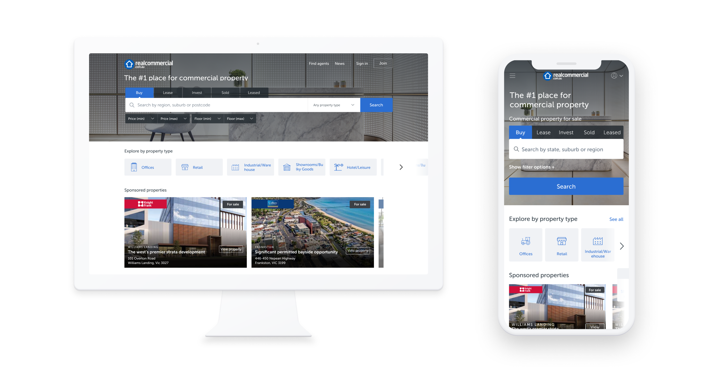
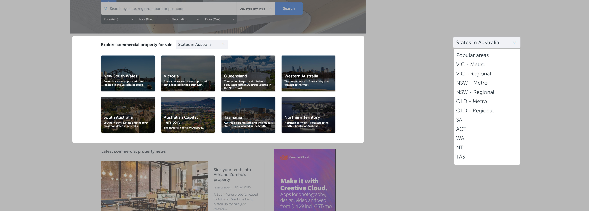
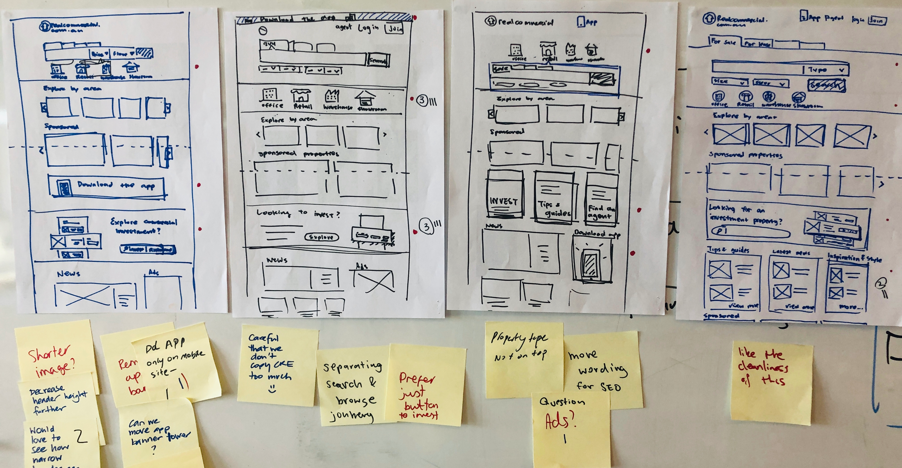
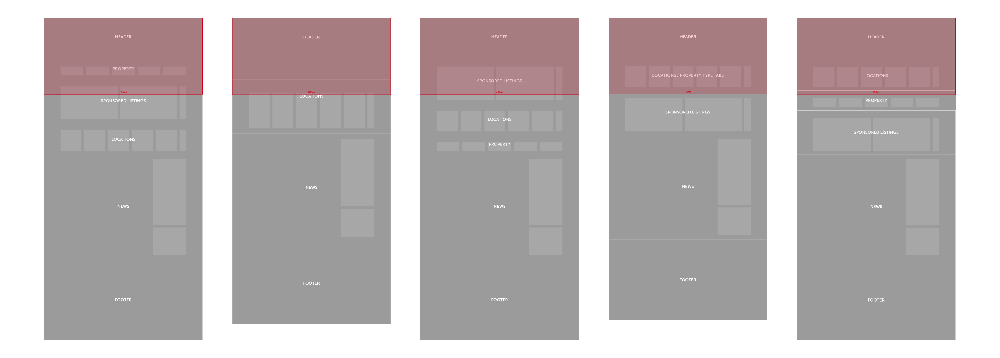
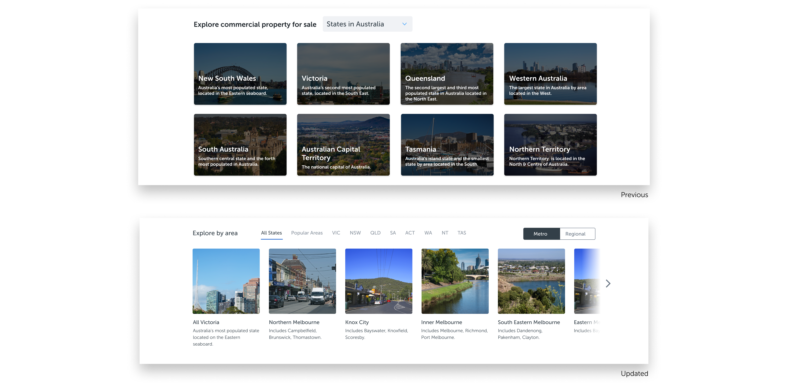
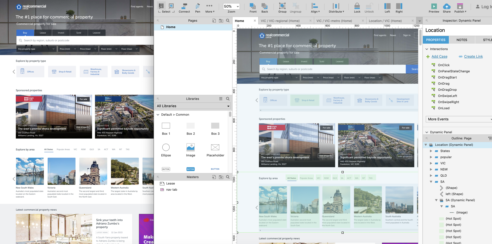
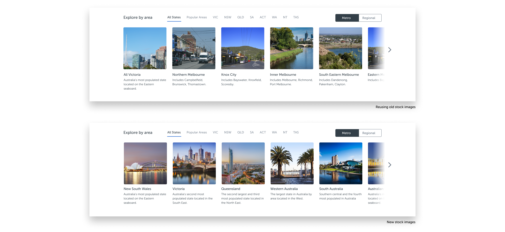
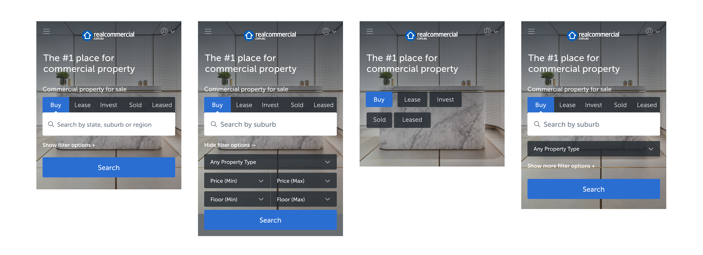
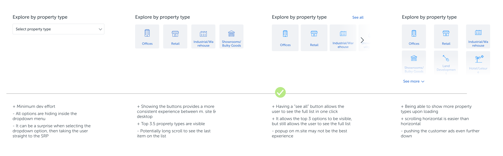
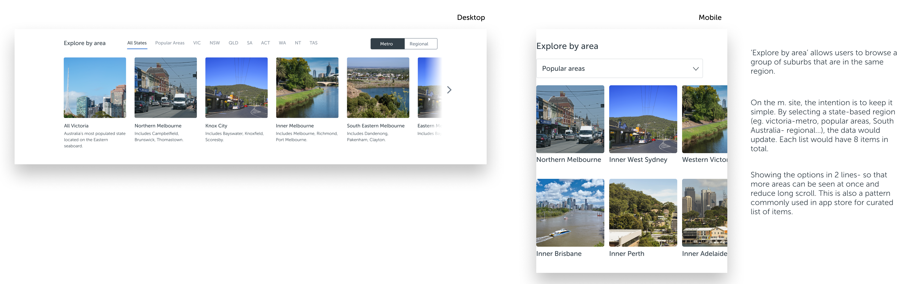

RCA Homepage

Background
Like many projects, it started with a simple business requirement. The goal was to update the background the Realcommercial homepage search area with new stock images. As we worked on the homepage, my team and I discovered more things we had to fix for the homepage.
Before working on this project, I didn’t know much SEO. It was just something I’ve heard of, done a workshop, but without much experience designing for. I came to realise how SEO can have an impact on the business, verses social traffic spending. As Realcommercial is currently the No.1 commercial property search portal in Australia, we had to ensure it comes up top on the search result. Our customer wants their property listings to come up on google, not hiding behind pages.
As I began to learn about SEO, I learnt that one of many things that can impact the ranking is back-linking. Previously the homepage was simple, but lacked of content from a homepage perspective. From there, the project turned into a homepage redesign. The gaol was the add links and useful content into the homepage.
Understand the problem
I started with a quick discovery research to understand our users’ search behaviour on desktop. From my experience working on the Realcommercial app, I found out our app users would typically like to start out with a wider search, just to see all their options, before narrowing down to specific criteria. I wanted to confirm if desktop users also have similar approach.
Browse by property type
From the research observation, I was able to confirm my assumption that most of our users don’t just come straight to homepage to ’search’. For example, investors may want to see ‘all property types’ in a specific city, or ‘all the warehouses’ in Australia.The previous homepage only catered for people who know what they want, with the main focus being the search bar. There is an opportunity to enhance the browse journey and adding more shortcuts for people who are still exploring. This helps users who are still early in their search and research journey.
UI issues

Another key insight I got from the research was about ‘browse by popular area’. The section itself provides buyers to check out popular areas in different states in Australia. However, nobody noticed the dropdown. In addition to that, having text sitting on top of the photo affected its readability. Not only our users couldn't read the text property, it was also hard to see the photo with the dark overlay.
The approach
Low fidelity concepts

I began to do some sketches on paper with a few very different concepts. This helped me to navigate through the ambiguity and brought stakeholders on the journey. I held a design review session with the team and explained each concept. Some concepts required more changes than others, or prioritised content differently. From the meeting, we agreed on making incremental change, rather than implementing a drastically different concept to our current homepage.
Prioritising content

Given there were quite a bit of new content on the page, it was important to get the order right before moving forward. I mapped out the potential options in low fidelity wireframes for discussion. The challenge here was to balance SEO requirements, user needs, and customer request. There were certain content focusing on customers benefits, while some were for consumers needs. Having the low fidelity wireframes outlined different priorities helped with the decision making process. As SEO heavily relied on the hierarchy of text and content, there would be some tradeoffs and we had to make sure we got our priority right.
Explore by area

At the start of the project, the team looked at the analytics and concluded that it’s not useful. Looking at the analytics, not many people clicked on this area of the page based on the previous design. However, from research I found out the problem was more around the dropdown not being used, or noticed. When we simply look at the numbers, we can easily assume that it has very little value and potentially jump into the conclusion of taking it down. I believe we should dig a bit deeper when looking at data and understand why.

I then took the matter into my hand and proposed a different design. Although it did add a bit of time to the scope, the team was open to the recommendation. By turning the dropdown pattern into an open menu wasn’t too hard to implement. Even better, bonus points for SEO from the states names!
Going an extra mile

While the team was working on the new design, I felt we should also use this opportunity to update the current stock images for ‘Explore by area'. The challenge in commercial properties world is that professional stock images can be hard to come by. I took some time to find suitable images for all the regions in Australia to ensure the new update is nice and sleek.
Optimise the design for mobile
Mobile first is a term widely used in this industry. However for the nature of this project we did take a different approach. I still wanted to make sure the mobile site is not neglected from a usability point of view.
Search area

Currently the search area on the homeapge includes some filter options to allow users to set their key criteria really fast. Ideally on mobile the page the experience should be breaking down into steps, rather than showing users a big form of options, especially on the homepage. After having a discussion with tech, we agreed that the search flow shouldn’t change between desktop and mobile site. The challenge here was to make the mobile site look elegant but still keeping the functionalities. So rather than changing the behaviour, I came up with the design that shows and hides additional filter options with one click. It has minimum development effort because it’s responsive, at the same time it also allowed our homepage to look clean on a mobile phone.
Property types

For property types carousel, it works fine to place 9 property types on the desktop. However when it’s on the mobile site it can be a very long carousel to scroll through. I considered a few design patterns, including a dropdown, displaying them all on the page, or keeping the carousel pattern. After looking at analytics with the team, I got to understand that the majority of our searches were done for the top 4 property types. It gave me the confident to keep the design pattern consistent between desktop and mobile site because users can easily see the top 3 or 4 on their phone. I also added a ‘view all’ button that would open up all property types in a modal for quicker selection. This would also give us a good idea from analytics to track and understand our user behaviour for future iterations.
Explore by area

For ‘explore by area’, it was hard to translate the new design from desktop to mobile. I don’t think we should do responsive for the sake of responsive. Based on how users choose the area, it was the best to use a dropdown for states, instead of laying them out on the page. Once the state is selected from the dropdown, the cards(areas) would update based on selected state.
The result

There are other part of the project I cannot include here. However I’m happy to chat in person.